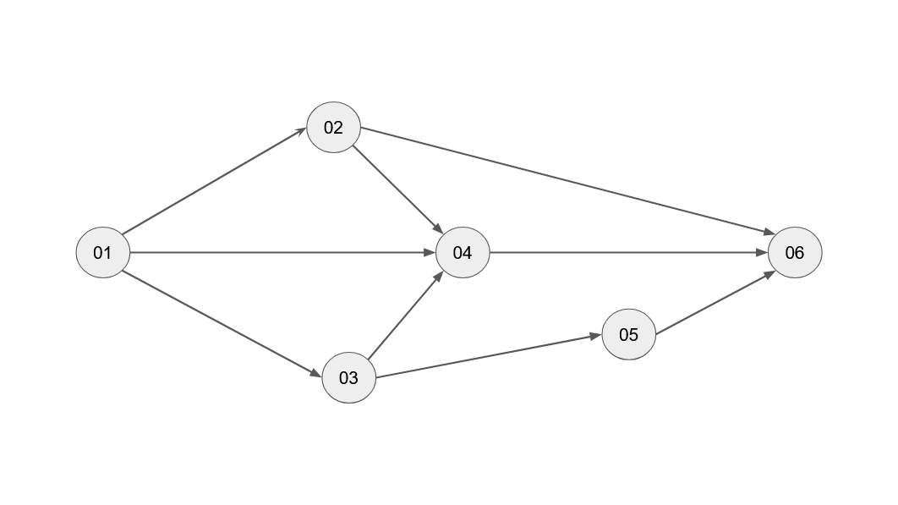

| ITT |
FEDERAL ELECTRIC CORPORTATION
Uma subsidiária da International Telephone & Telegraph Corporation |

Tradução de
REGINALDO UELZE
DANIEL DOS SANTOS
VIRGILIO SPINOLA
da Faculdade de Ciências Econômicas da universidade Mackenzie